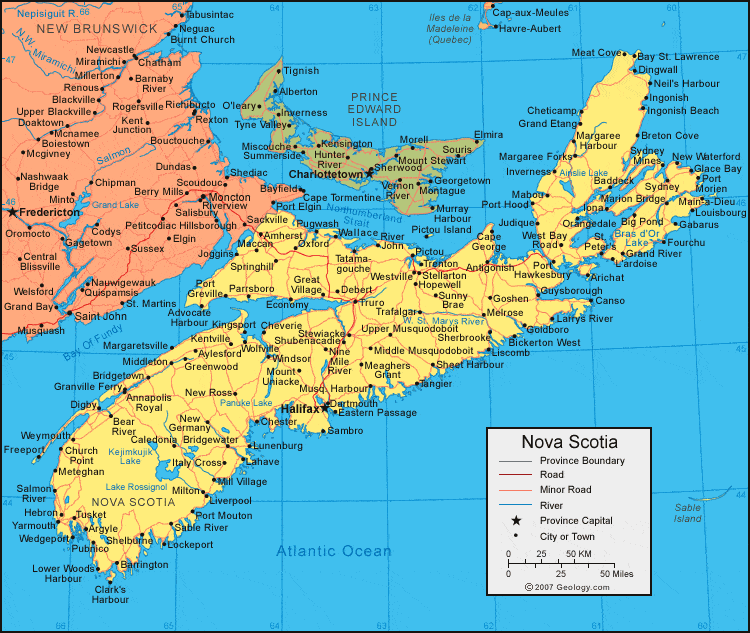
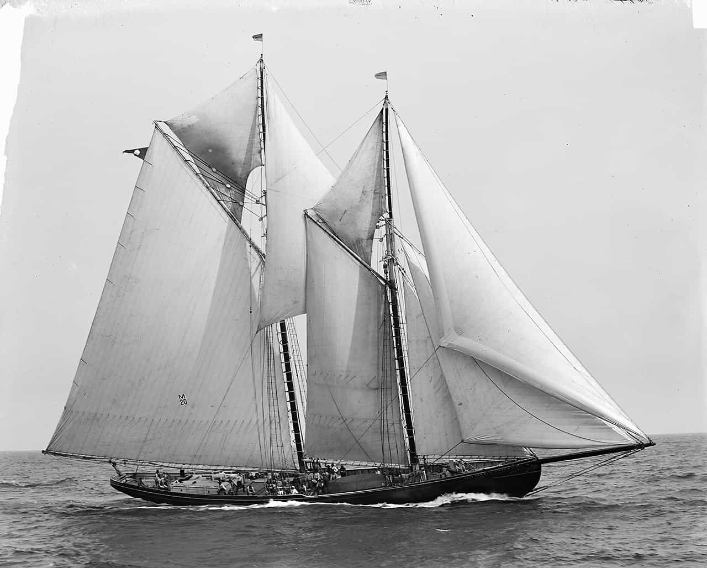

Quintus can be found at qcurtius.com. He is the author of the books On Duties, Thirty Seven, Sallust: The Conspiracy Of Catiline And The War Of Jugurtha, and other books. His work has been reviewed at Taki's Magazine. He can be followed on Twitter


Cape Sable in Nova Scotia has been the scene of many hundreds of shipwrecks over the centuries. According to one reliable chronicler of the days of sail, that number is close to 340. I remember the story of one such wreck that stands out for the extraordinary tale of suffering and survival it contains. We will tell the tale of the wreck of the schooner Cod Seeker, which went down on May 9, 1877.
The Cod Seeker was a two-masted fishing vessel built at Clyde River, Nova Scotia, in 1877; after being provisioned and fitted at Halifax, it embarked on its first cruise with a crew of 13 and a captain named Philip Brown. Codfish was her object; then as now, the cod industry was a key part of the economy of the area. (I should add that I myself worked at a codfish processing house on the New Bedford waterfront before going to college).

But the ship ran into rough seas near Baccaro Light and capsized a few days after leaving Halifax. In the confusion and chaos surrounding the disaster, the captain and another crewman jumped into a dory (a shallow-bottomed boat) to get away from the schooner, which by now had rolled over in the water amid turbulent seas. Since it was night, he could not see who else had been able to get off the wreck. The captain was able to guide the dory to Cape Sable Island, where he organized a rescue team to head back out to sea to hunt for survivors of the Cod Seeker.
The rescue mission picked up four sailors, but they were not aware that two crewmen (Samuel Atwood and James Smith) were actually trapped inside the forecastle of the capsized boat, surviving in a pocket of trapped air. The two men were at first amazed that the entire compartment had not flooded, but the air pocket managed to keep the water level from rising. There was some food and provisions in the forecastle, but not much; at most they would have enough for a few days.
The water level, however, gradually began to rise. At first it was only about 4 feet deep; but then the men noticed a gradual and steady increase in the level. But they were soon aware of something even more horrifying: the schooner was sinking. Dropping below the ocean surface, the terrified men felt the ship going down, down, and still further down. Eventually they felt the ship rattle as it hit the ocean floor; the masts hit first, and then the hull. The ship settled into new position, and the men could only hope that death might come quickly, perhaps through asphyxiation or perhaps through the crushing of the ship’s hull by water pressure.
But after a few hours something very strange began to happen: the ship slowly righted itself and slowly, slowly started to float to the surface. What had happened? Cod boats in those days carried large, heavy bins of salt to preserve the fish caught at sea. The weight of the salt had undoubtedly helped carry the Cod Seeker to the bottom; but when the salt dissolved in the flooded ship, it lost this weight, and was carried back to the surface.
Although Atwood and Smith had been saved from certain death, they were still back in their original predicament. The air in the compartment had nearly lost its oxygen, and the men were suffering from the symptoms of carbon monoxide poisoning. By this time they had been in the forecastle for about eighty hours, and the ship had drifted far in the ocean currents.

An American schooner from Maine named the Ohio was cruising near Seal Island (in the Gulf of Maine) when the lookout spotted a shape on the ocean surface that he took to be a whale. As they sailed closer, they realized it was a floating shipwreck. The Ohio’s captain launched two of his men to investigate; and the men climbed aboard the hull of the Cod Seeker to have a look at the situation. As they did, they began to hear a steady pounding coming from within the hull. With a shock they realized that there were living men entombed in the ship, and called for an axe to be brought immediately.
Yet more danger awaited. As the axes crashed through the hull of the ship to liberate the two men inside who were already near death, the pressurized air within burst out, and the water level began to rise again. The ship was sinking, and quickly. By breaking into the pocket of air in the ship, they had inevitably allowed the water to resume the flooding of the forecastle. It was now a race against time to make the hole big enough to get the two men out before the ship sank for good beneath the waves. They won the race against time. After being trapped for ninety hours in the hold of the Cod Seeker, both Atwood and Smith were rescued.
Amazingly, the Cod Seeker did not go to the bottom after the rescue. The ship was towed to Port Maitland in Nova Scotia, repaired, and sent back out to sea. The further adventures of the Cod Seeker are not known to history, but it is said that Atwood and Smith thereafter looked as if the stress of the ordeal had aged them many years.
Read More: Adrift In The Arctic: The Incredible Story Of Bruce Gordon